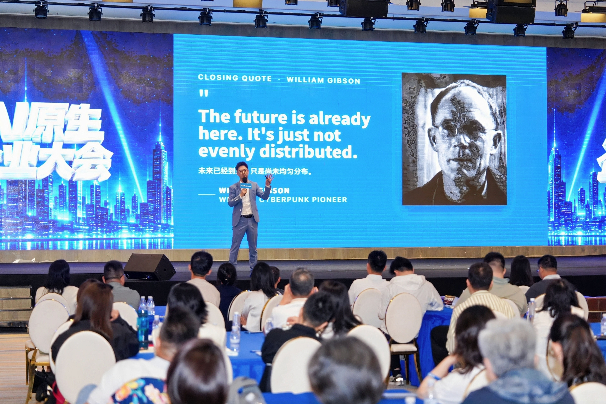
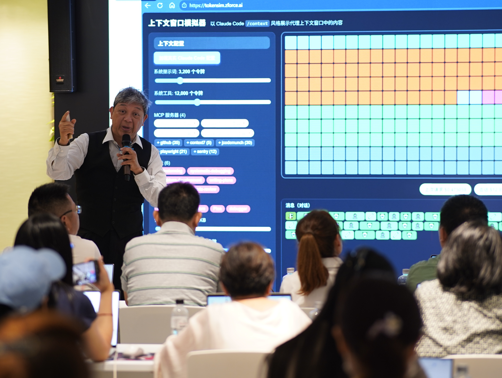

企业推进 AI 的机会地图
明确未来 6 个月企业优先开发哪些智能体，解决哪些业务场景的痛点。
3 个月三次集中学习
10 天3＋3＋4 天 · 学习与实战
1＋3企业家与三位公司骨干
¥128,000含四次企业专属诊断
THE NEXT CHAPTER OF YOUR BUSINESS
你已经积累了客户、产品和行业经验。现在，让 AI 帮助团队规模化你的最佳实践。
让老板更快速做决策、骨干制定规则、数字员工承接任务，AI 才能逐步进入真实业务。MindsLeap 将系统学习、实战演练、企业诊断与项目辅导连接起来，陪你和团队实践成为 AI 原生组织的转型之旅。
带着场景进入课堂，在公司里试用与迭代，先完成效率提升，再探索商业模式创新。
明确未来 6 个月企业优先开发哪些智能体，解决哪些业务场景的痛点。
让核心团队掌握任务拆解、Agent 协作与成果验收方法，成为企业 AI 转型的内部推动者。
把企业知识、最佳实践、数据规则与工作流沉淀为可持续迭代、可被 Agent 调用的数字资产。
围绕行业重构机会，验证新的价值主张、服务方式与交付模式，形成可持续推进的 Moonshot 项目。
WHO THIS PROGRAM IS FOR
已有真实业务，愿意带着核心团队，为一个具体问题投入实践。
YOUR LEARNING JOURNEY
认知、实践与反馈交替推进，让每次学习都连接企业现场。
第一次学习 · 3 天
个人驾驭 AI，让个体效率 10X
从第二大脑到第一位 AI 员工，让老板与骨干先掌握编排、训练和验收数字员工的基本能力。
Day 1—3第二次学习 · 3 天
让 AI 进入团队的增长系统
把品牌、内容、销售、客户运营沉淀成可协作的 Agent 团队，让最佳实践不只停留在少数高手身上。
Day 4—6第三次学习 · 4 天
从经营决策到第二增长曲线
搭建经营决策中枢，完成治理与风控设计，再用 Innovation Day 推演 AI 时代的新业务机会。
Day 7—10PROGRAM CURRICULUM
前九天：半天认知与方法，半天实战与交付。
最后一天：企业参访与 Demo Day。
具体开课日期与场地以正式排期为准。实战根据企业业务选择适合的场景，B2B / B2C 分支无需重复完成。
FOUR STRATEGIC CONVERSATIONS
围绕你的企业资料、项目记录与实际问题，决定下一步行动。
当前处在哪个阶段？从哪里开始？
哪个机会值得投入？怎样立项？
应用为什么有效，又卡在哪里？
如何留下成果，并扩大应用？
YOUR BUSINESS. YOUR BIG PROJECT.
一个主项目，贯穿三个月。每次课堂成果、每次企业诊断，都为它增加一块可用的能力。
LEARN TOGETHER. BUILD TOGETHER.
与同样愿意行动的企业家和骨干一起学习，交流推进过程中的判断、难题与经验。
第三次学习的最后一天，走进 AI 企业，并在 Demo Day 展示你们的项目。优秀项目可进入孵化评估，有代表性的实践者有机会受邀参加 Founders Talk。
参访对象以正式安排为准；孵化与访谈机会通过评审和邀请确定。


YOUR PROGRAM TEAM
从业务判断到能力搭建，将课程中的方法连接到企业项目。

MindsLeap 创始人兼 CEO
Founders Space 合伙人兼中国区 CEO
AI 机会判断、企业增长与组织变革。
MindsLeap 联合创始人兼 CPO
课程产品负责人
数字员工、知识系统与学习产品设计。
AI 落地交付合伙人
数字员工实战
工具连接、工作流搭建与项目实施。
课程团队根据项目安排协作，具体授课与辅导排班以正式通知为准。
INVEST IN YOUR TEAM'S NEXT CHAPTER
企业家带队，最多三位公司骨干同行。
具体排期、辅导频次、第三方工具及差旅食宿费用范围，在项目服务说明中列明。
¥/ 企业
含 1 位企业家 ＋ 最多 3 位本公司员工
最多 4 人，共同推进 1 个企业主项目。
增员名额以班级容量为准。
QUESTIONS, ANSWERED
可以。课程面向企业经营者与业务骨干，使用模板和示范建立应用。参加者需要能够使用电脑、整理业务资料，并完成课前账号与环境准备。复杂系统接入会在诊断中明确实施条件。
建议覆盖增长或销售、运营或交付，以及数字化或项目推进三个角色。可以根据企业情况调整，关键是指定一位持续负责的项目推动者。
三次集中学习共 10 天。课间建议骨干团队每周合计预留 3—5 小时推进项目，企业家参加关键诊断，并安排每周约 30 分钟项目复盘。具体安排在入学时说明。
包含。四次分别是课前成熟度摸底、第一次学习后的机会地图诊断、第二次学习后的增长诊断，以及 Demo Day 后的组织变革诊断。
本计划通过学习、诊断和辅导，支持企业骨干推进一个明确范围的主项目。课堂覆盖原型与工作流，主项目进行业务验证。大型系统改造、复杂定制开发及生产级部署需要另行明确实施范围。
采用三个月、三次到场的安排，分别为 3 天、3 天和 4 天。具体日期、地点与参访企业正在安排，可通过课程咨询了解正式排期。
所有参与企业都有 Demo Day 成果展示环节。优秀项目可进入孵化评估，有代表性的企业实践者有机会受邀参加 Founders Talk，具体通过评审和邀请确定。
YOUR NEXT CHAPTER STARTS WITH ONE PROJECT